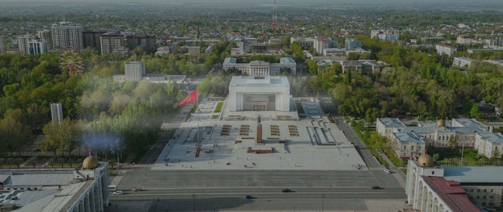

Инфраструктура
Цифровая инфраструктура уже работает
В 2025 году через систему межведомственного взаимодействия «Тундук» предоставлялась 191 государственная услуга, 141 из них оказывается полностью автоматически. Гражданам доступны онлайн-паспорт, онлайн-кадастр и цифровая идентификация Kyzmat ID, на выборах применяется биометрия. Приложением «Право на здоровье» могут пользоваться 5,2 млн человек.
191государственная услуга через «Тундук» в 2025 годуСвязаться